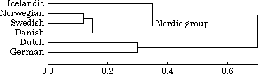

File formats
Definitions of file formats shared between programs
(except some files only used for drawing maps)
General rules for all files
Empty lines, or lines with just white space (spaces and tabs) are ignored.
Leading and trailing white space is ignored.
Lines starting with a hash are ignored. Note: The hash symbol is
used to start lines that are comments. You can not have comments
following data on the same line. Comments must be on a line of their
own. Examples:
# This will be ignored
no comment # This will NOT be ignored
Rules for space delimited data files
Space delimited data files are files where each line of data contains
the same items, separated by spaces or tabs. These file types are:
- Label file
- Coordinate file
- Indexed cluster group file
All these files have on each line one or more numeric items followed by
a text item as the final item. These text items may contain spaces. The
Levenshtein software knows how many items there are supposed to be on
each line, and has no trouble with a final text item containing spaces.
However, to enable import and export of these data files to and from
other software packages, these final text items are put between double
quotes when they contain spaces (or if they start with a quote).
Note:
text items are never put within quotes in data files other than those
three types listed above.
Examples:
77.2 28.6 1 0 New Delhi
77.2 28.6 1 0 "New Delhi"
Both lines are acceptable as input to the Levenshtein software, and they
are interpreted identically. Only the second line will be given as output.
A quote within a quoted text item must be escaped with a backslash, as well as
a backslash itself:
1000 "a string with a \" quote and a \\ backslash"
However, don't use escapes in unquoted strings:
2000 unquoted"string
Label file
See also:
General rules for all files
See also:
Rules for space delimited data files
This defines what labels are to be used in some other data set,
and in what order. It is a set of index numbers followed by labels. Example:
3 "New Delhi"
1 Bombay
2 Calcutta
Labels should be numbered from 1 to the maximum number of labels. No
numbers may be skipped. No numbers may appear more than once. No labels
may appear more than once.
The order of lines is not important. The numbering defines the order in
which the labels are actually used.
Coordinate file
See also:
General rules for all files
See also:
Rules for space delimited data files
This assigns map coordinates to names of places or locations. Example:
77.2 28.6 1 0 "New Delhi"
The first two numbers define the X- and Y-coordinate (in that order).
These coordinates can be defined as longitude (west is negative, east
is positive) and latitude (south is negative, north is positive), as in
this example. Or they can be represented in some user defined
linear grid, possibly with different scales for X and Y. What type of
coordinates are used must be set as an option to the software.
The third and fourth number are used only by the programs that draw maps.
The combination of 1 and 0 is a reasonable default. See
map configuration file: markers for
the meaning of these numbers.
Difference matrix file
See also:
General rules for all files
A difference matrix file defines the differences between a set
of items. It is produced by the following procedure:
PRINT max
NEWLINE
FOR i = 1 TO max
PRINT label[i]
NEWLINE
FOR i = 2 TO max
FOR j = 1 TO i - 1
PRINT diff[i,j]
NEWLINE
max is the number of items.
label[i] is the label for item number
i.
diff[i,j] is the difference between items with numbers
i and
j.
diff[i,j] is equal to
diff[j,i].
If
diff[i,j] is unavailable, the text
NA is printed.
Matrix transformation file
See also:
General rules for all files
This defines how a new difference matrix file or coordinate file should be
derived from an old one.
Example:
: India
- Bombay
- Calcutta
- New Delhi
: Pakistan
- Lahore
- Karachi
: Nepal
- Nepal
This says we need a new set consisting of only three items, India,
Pakistan, and Nepal. The first is derived from Bombay, Calcutta and New Dehli in
the old set, the second is derived from Lahore and Karachi, the third is
used unchanged. Not all labels in the old set need be used to derive a new set.
Vector file
See also:
General rules for all files
A vector set is a collection of items, each with a label and a fixed
number of numeric values. An example:
3
New Delhi
.84
.53
.66
Calcutta
.33
.87
.82
This vector set has two items, New Delhi and Calcutta, each with three
values. The number 3 on the first line defines how many values there are
for each item.
Hierarchical cluster definition file

The hierarchical clustering above is defined as:
1 .12
L Norwegian
L Swedish
2 .15
C 1
L Danish
3 .3
L Dutch
L German
4 .35 Nordic group
L Icelandic
C 2
5 .7
C 4
C 3
There are five sub-clusters. Each sub-cluster is defined in three lines.
Sub-clusters may be arranged in any order.
The first line of each sub-cluster starts with a positive integer value
used to identify this cluster. Numbers can be arbitrarily chosen, as
long as they are unique. Following the number is a value
indicating the numeric size of the cluster. Following the value is
optionally a text describing the cluster (sub-cluster 4 in the example).
The second and third line define what are the two components of this sub-cluster.
A line starting with a letter C indicates another sub-cluster (daughter
cluster), the number following the letter C identifies that sub-cluster.
A line starting with L defines a terminal node (leaf), and the text following
the letter L is the label for that node.
Colour file
See also:
General rules for all files
See also:
Rules for space delimited data files
This file defines a set of colours. Colours are listed in order, one on each
line, using three values for its red, green, and blue component. Values
should be in the range 0 to 1, or 0 to 255.
Example with red, gray and blue:
1 0 0
0.5 0.5 0.5
0 0 1
The same, using the larger range:
255 0 0
128 128 128
0 0 255